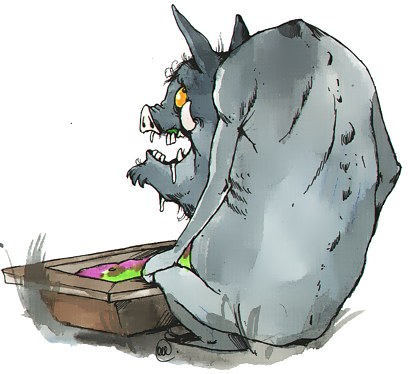

Баба Яга - 62-го размера нога. Самая страшная женщина в мире. После встречи с ней даже лысые мужчины седеют от ужаса.
Обуратни. Люди, которые в полнолуние превращаются в буратин и, впиваясь зубами в стволы деревьев, пьют их сок. Особенно обуратни любят березы. Так что если где засохла роща, знайте - это работа обуратней! На людей, слава богу, они не бросаются, но стать обуратнем может любой человек, которого клюнет в шею бешеный дятел.

Бурдалак. Опустившийся вурдалак. Вместо крови лакает любую бурду.
Минитавр. Карликовое чудище, которое так и не выросло, потому что в детстве курило.
Тупырь (он же Дуракула). Тупой упырь. Он настолько туп, что нападает сам на себя и пьет у себя же кровь. Иногда, впрочем, ему удается отбиться от себя, убив осиновым колом.
Баба Яга - 62-го размера нога. Самая страшная женщина в мире. После встречи с ней даже лысые мужчины седеют от ужаса.
Кариозный монстр. Убить это страшилище, обитающее во рту, можно маленьким осиновым колом, сделанным из зубочистки или чесночной жвачкой. Кроме этого, кариозные монстры боятся серебреных зубов, отлитых из серебряных пуль
Присрак. Приведение пугающее человека так, что он от страха накладывает себе в штаны
Думовой. Домовой, живущий в Думе. По ночам он работает с документами наших законотворцев. Чтобы думовой не шалили, депутаты оставляют ему в блюдце коньяк.
Чумовой. Домовой, живущий в чуме. Похож на маленького Деда Мороза.
Трусалка. Благопристойная русалка, плавающая в больших семейных трусах и никогда не появляющаяся перед мужчиной голой. Не путать с безтрусалкой, соблазняющей рыбаков. Так же трусалку не следует путать с испуганной нимфой, которая пугается, когда рыбаки застают ее плещущейся в воде голышом.
Хоборотень. Слон-оборотень, способный превращаться в чего и в кого угодно. Однако во что бы не превращался хоборотень, его легко вычислить, так как он будет размером со слона и обязательно с хоботом
Выборотень. Кандидат в депутаты, который после того, как за него проголосуют, забывает наказы своих избирателей.